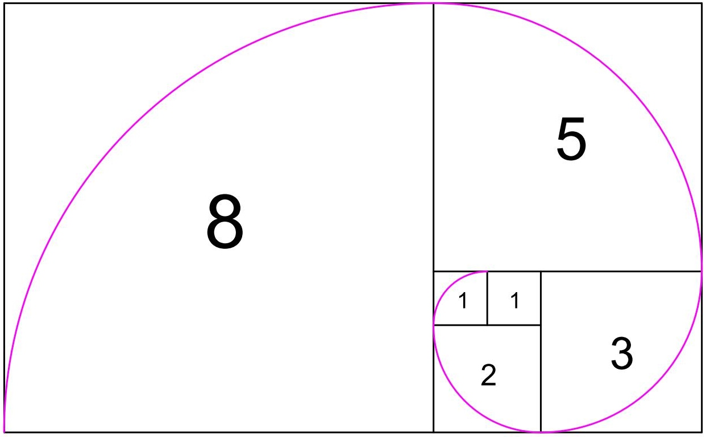

Instructor
Peter McHale

Office Location: 2636 Biological Sciences III
Office Hours: TuTh 9am - 11am
Teaching Assistant
Luke Fredericks
Office Location: Rowland Hall 250A
Office Hours: TuTh 11AM to 12:50PM
Lectures
L01: The Longest Run of Heads in coin tossing (Background reading)
L02: Starting to count
L03: Prime factorization; Permutations; Combinations
L04: Counting with repetition
(Bagel Problem)
L05: Combinations and the Birthday Paradox
(Background reading)
L06: Birthday Paradox (continued); Induction; Pascal's Triangle
(Six Ways to Count the Number of Integer Compositions;
Bijective proof)
L07: Hockey-stick Identity; Fibonacci Identity

L08: More Fibonacci facts;
Zeckendorf's theorem
{kind=link}
Homework
Piazza
We will use Piazza for discussion of class material. Rather than emailing questions to the instructor/TAs, please post your questions on Piazza. The system is highly catered to getting you help fast and efficiently from classmates, the TA, and the instructor.
Piazza questions and answers are like Wikipedia: anyone can contribute to them. I encourage you to collaboratively edit questions and answers because these are far easier to read and comprehend than a long thread of comments.
Please sign up at: https://piazza.com/uci/winter2018/45210. You will be asked to enter a "Class Access Code", which is 45210.
Practice Exams
Miscellaneous
Re-grading
A request to regrade a particular problem will only be considered if an egregious grading error has occurred and will prompt re-consideration of the entire script, which may result in the overall grade going down. Regrading will NOT be considered once the graded script leaves the classroom. Return the script to your TA immediately when you see the grading mistakes. Your TA will be responsible for regrading of homeworks/quizzes and the instructor will take care of regrading exams.
Enrollment questions
Contact the Math Dept Undergraduate Program Coordinator, Michael Vo, at (949) 824-6770 or myv@uci.edu or 340B Rowland Hall.
Academic Dishonesty Policy
Academic dishonesty will be reported to the Academic Integrity Administrative Office for disciplinary action. Students found guilty of academic dishonesty are subject to penalties ranging from loss of credit for work involved to a grade of F in the course to suspension or probation. The academic dishonesty policy will be enforced in all areas of the course, including quizzes and exams.
Academic dishonesty includes, but is not limited to: copying answers from another student, allowing another student to copy your answers, communicating exam answers to other students during an exam, attempting to use notes or other aids during an exam, or tampering with an exam after it has been corrected and then returning it for more credit. If you do so, you will be in violation of the UCI Policies on Academic Honesty. It is your responsibility to read and understand these policies. You need to avoid even the appearance of impropriety on your exams – keep your eyes on your own exam and do not hold your exam up to look at your answers because students behind you can see your answers.